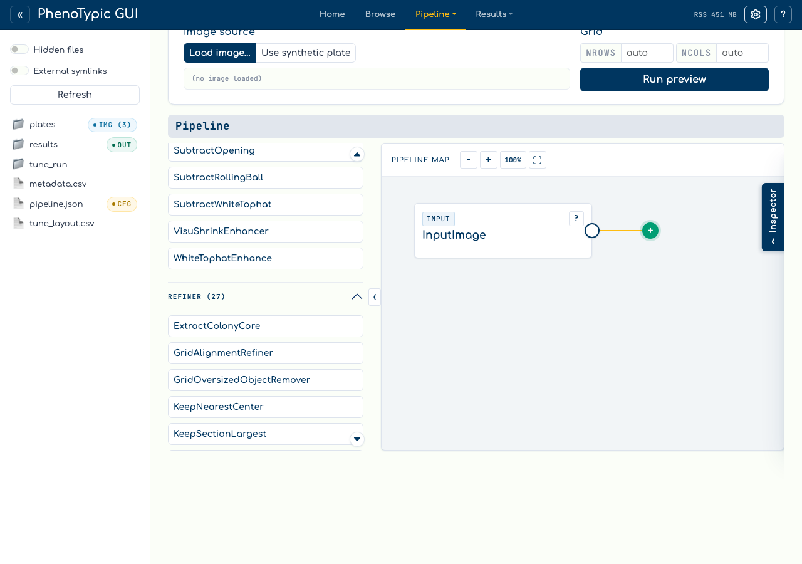
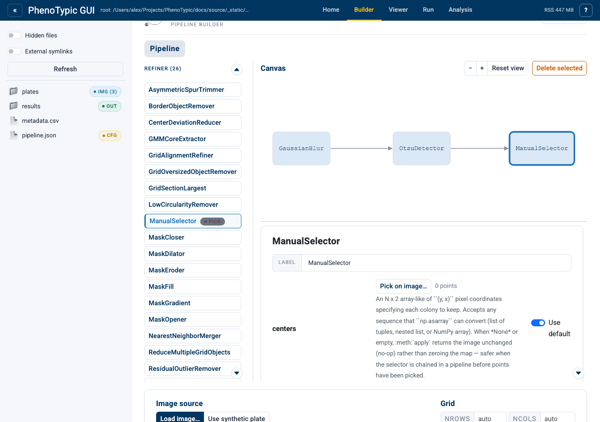
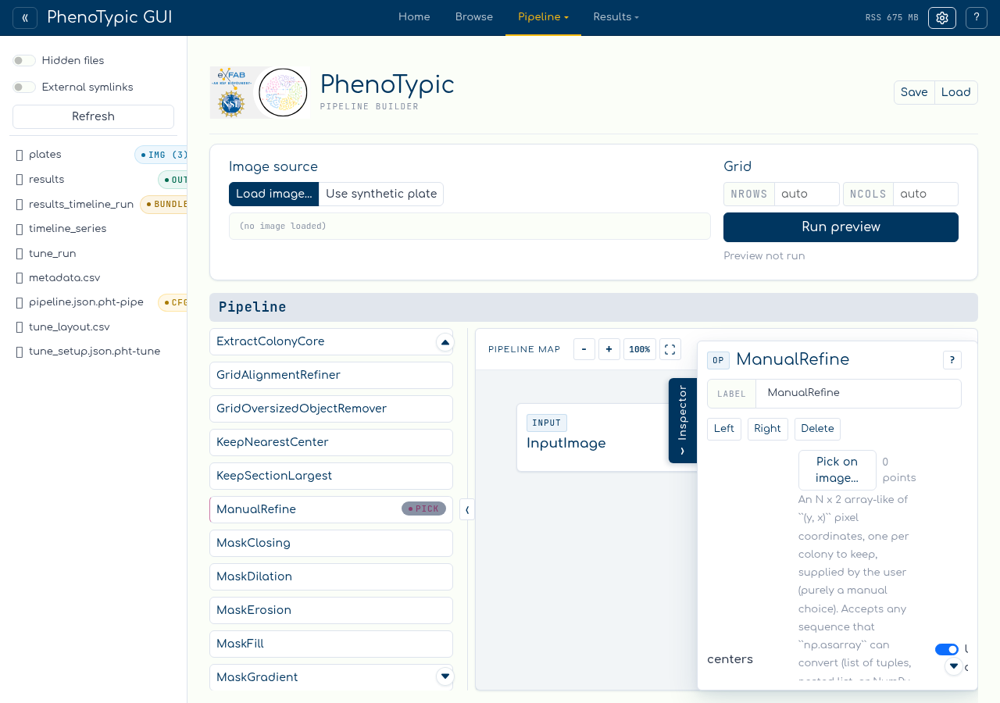
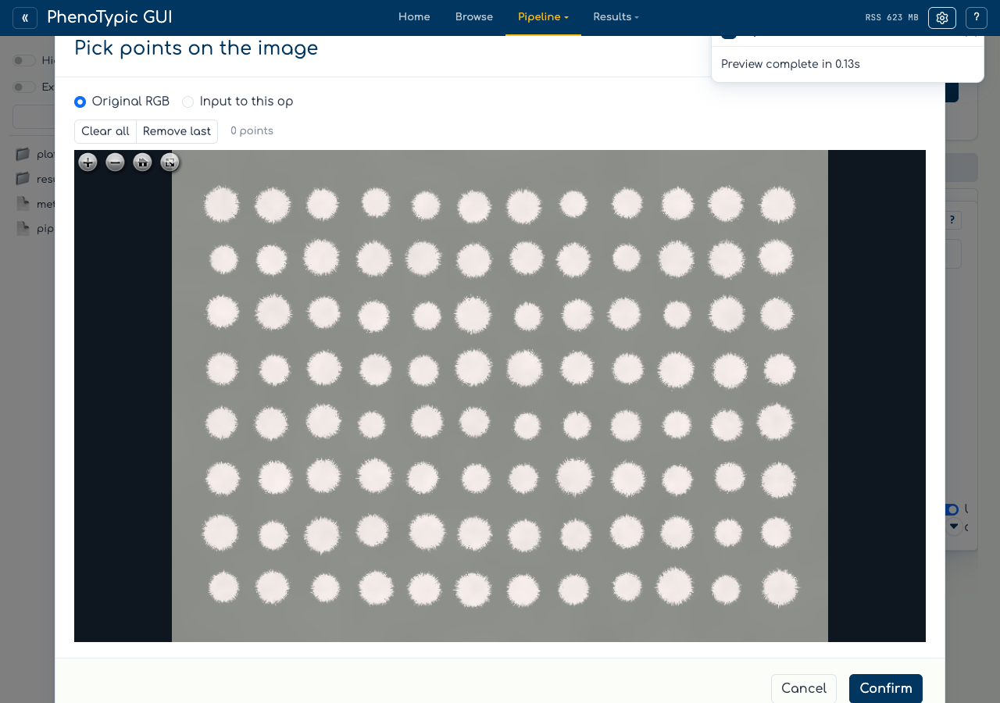
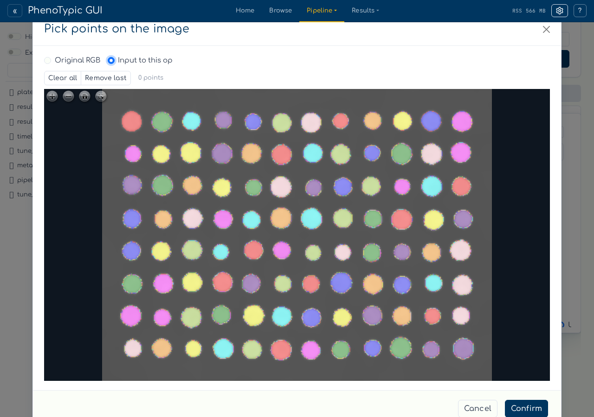
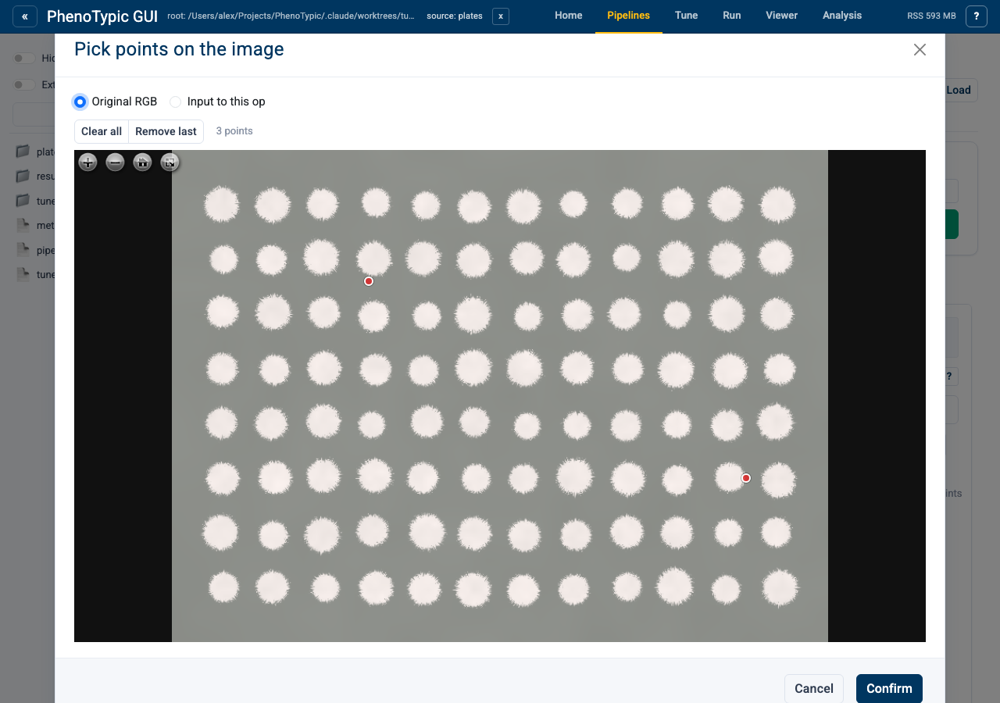
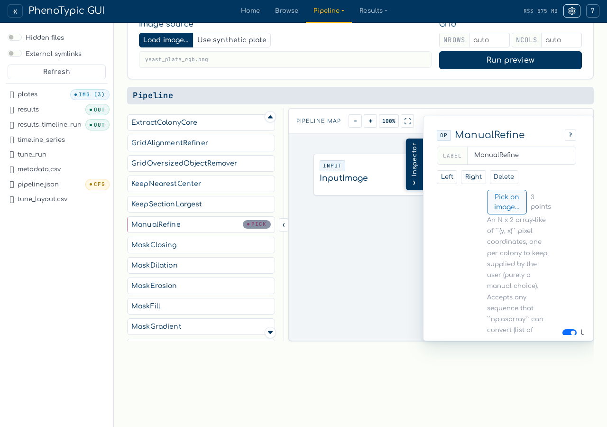
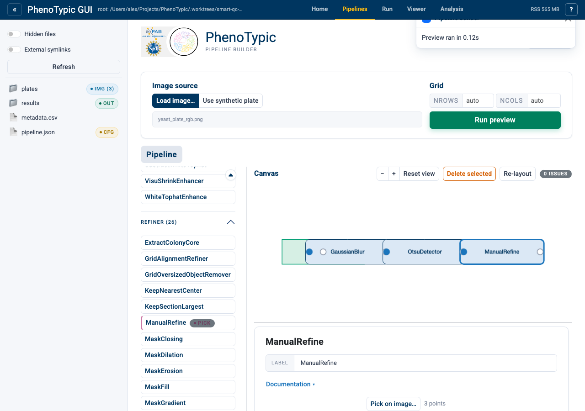

Pick Points#
Some operations need explicit (y, x) coordinates that you can’t infer from
an image automatically — for example, when you want to curate an existing
detection by keeping only the colonies you confirm visually, or when you want
to generate an objmap from scratch at user-picked centres.
The builder ships an in-page point-picker for two operations:
ManualRefine(Refiner) — keep only the labels in an existingobjmapwhose pixels overlap user-picked footprints. Useful for dropping false positives without re-running the detector.ManualPointDetector(Detector) — produce anobjmapfrom scratch by stamping a footprint at each user-picked centre. Useful for irregular plates or quick prototyping.
Both operations carry a purple PICK badge in the operations palette so you can spot them at a glance.

Set up a curation pipeline#
This walkthrough curates an Otsu detection. The flow is:
Drag
GaussianBlurfromCorrectoronto the canvas.Drag
OtsuDetectorfromDetector.Drag
ManualRefinefromRefiner(it carries the PICK badge).Connect them in order: blur → detect → select.

Run preview once so the predecessor (OtsuDetector) caches its output —
the picker modal can then offer that intermediate as a clearer view for
disambiguation.
Open the picker#
Click the ManualRefine node to open its param form in the inspector.
The centers parameter has a Pick on image… button instead of a text
input.

Click the button. A modal opens with an OpenSeadragon viewer showing the original RGB plate.

Switch channels#
The radio at the top of the modal lets you switch between Original RGB and Input to this op. The latter shows the predecessor’s output — for this pipeline, that’s the Otsu binary mask, which can make individual colonies easier to distinguish from background noise.

The first time you toggle to Input to this op the modal pauses briefly while the intermediate tile pyramid is generated; subsequent toggles are instant. If the option is greyed out, run preview first so the predecessor caches its output.
Pick, undo, confirm#
Click on each colony you want to keep. A small red marker appears at the click position; the count label updates. The picks survive channel toggles — they’re stored as image-coords, so they re-anchor when the underlying view changes.
If you over-click, the Remove last button drops the most recent pick. Clear all wipes the list.

When you’re satisfied, click Confirm. The modal closes. The param form’s count label now reflects your picks.

Re-run preview#
Run preview again. The ManualRefine step keeps only the labels whose
pixels overlap your picked footprints; everything else drops out of the
objmap.

When to use which#
ManualRefineis the right choice when an automated detector finds too many objects and you want to retain a hand-picked subset. The surviving labels keep their original IDs, so downstream measurements reference the same identifiers.ManualPointDetectoris the right choice when you need to create anobjmapfrom scratch — for example, on irregular plates where no automated detector tracks the geometry, or when generating ground-truth masks for benchmarking.
Both pick on the same image-coords frame, so coordinates exported from one op are reusable in the other.